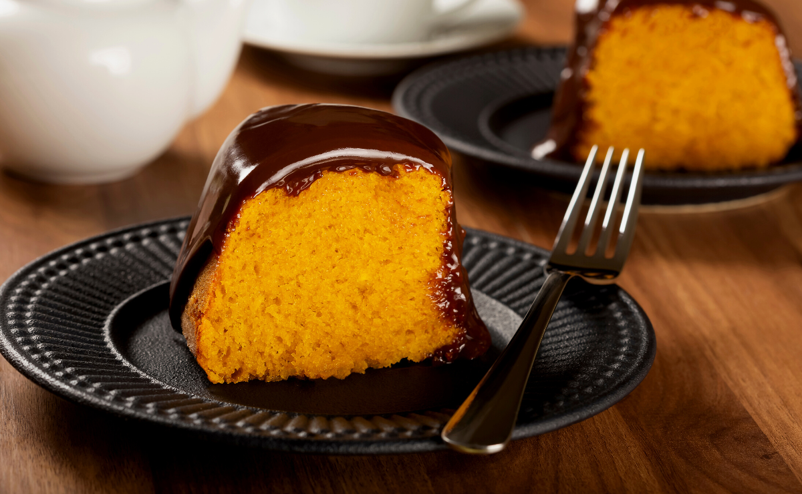

Modo de preparo
- Pré aqueça o forno a 180°C.
- Bata no liquidificador a cenoura, os ovos, o óleo e o açúcar.
- Em uma tigela, misture a farinha de trigo e o fermento.
- Adicione a mistura líquida à mistura seca e mexa até formar uma massa homogênea
- Coloque em uma forma untada e asse por 40 minutos.
